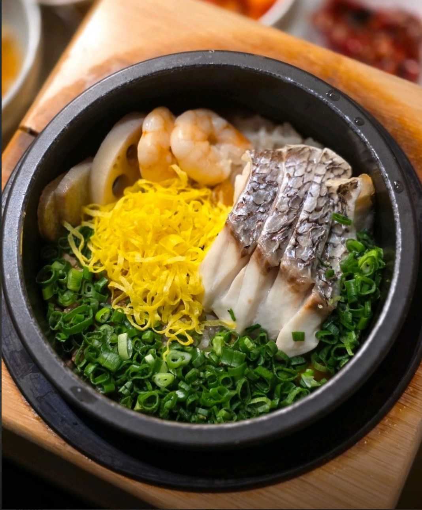
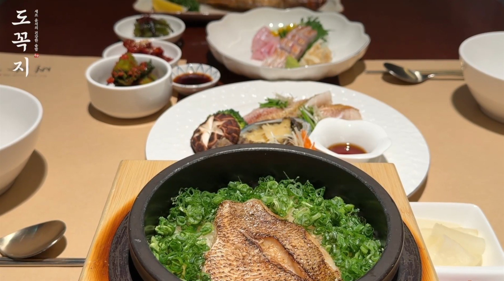
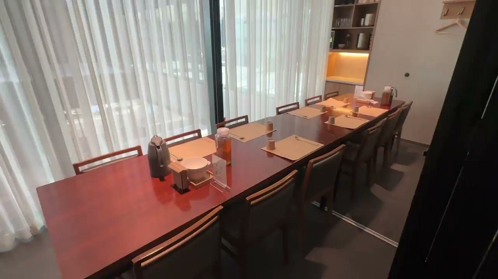
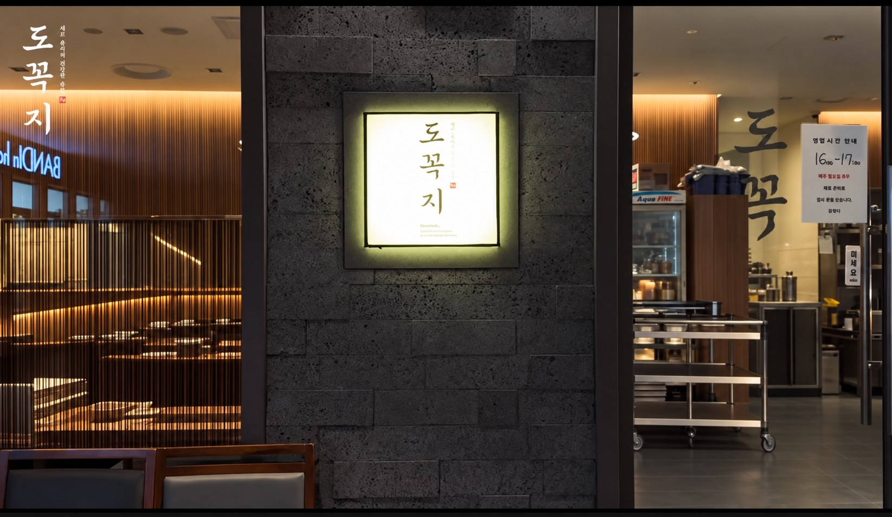

도미솥밥
29,000원도미와 갓 지은 밥이 어우러지는 한 솥.
잠실 한식 · 솥밥과 생선구이
도미를 올린 솥밥, 불 위에서 구워낸 금태.
따뜻한 밥과 생선으로 차리는 한 상.
도미·전복솥밥 각 29,000원
2–12인 룸 · 주차 2시간 무료
잠실점 · KT송파타워 2층 · 잠실역 10번 출구 인근
서울 송파구 잠실로 209, KT송파타워 2층 · 길찾기

따뜻한 솥 하나에 담은 한 끼멤버십
따뜻한 한 끼와 함께, 소중한 날도 기억하겠습니다.
매장 방문 시 QR을 열고 휴대폰 번호를 입력해 주세요. 기존 회원은 체크인, 처음 방문하신 분은 가입으로 안내됩니다.
성함과 생일을 입력하고 가입 안내를 확인해 주세요. 광고성 정보 수신동의는 선택입니다.
생일 혜택 안내를 받으시려면 도꼭지 카카오톡 채널을 꼭 추가해 주세요.
가입만으로 생일 초대권이 즉시 발급되지는 않습니다. 혜택 대상과 제공 시점은 매장에서 확인해 주세요.
가입 화면은 한국어로 제공됩니다. 휴대폰 번호 입력이 어려우시면 직원에게 문의해 주세요.
도꼭지의 한 상
잠실 한식당 도꼭지는 KT송파타워 2층에서 솥밥과 생선구이를 준비합니다.
도미·전복·금태를 담은 솥밥부터
생선구이와 계절솥밥을 곁들인 식사까지.
솥밥에는 프랑스산 이즈니버터와
직접 구운 곱창김을 함께 내어드립니다.
주방에서 식탁까지
솥밥 한 그릇부터 둘이 나누는 금태구이 한 상까지.
저녁 식사는 17시부터, 메뉴와 자리를 함께 살펴보세요.

메뉴와 좌석을 선택해 예상 금액을 확인하세요.
도미솥밥 또는 전복솥밥 2개
1인 1메뉴 · 각 29,000원금태구이 · 제육 한상
금태구이 1미 + 제육볶음 + 계절솥밥 2개금태구이 · 낙지 한상
금태구이 1미 + 낙지볶음 + 계절솥밥 2개홀은 룸 이용료가 없습니다.
2인 기준 · 할인 적용 전 · 추가 메뉴·음료 별도
룸 1개 이용료 20,000원 · 2–6인 · 90분 이용
룸과 홀 둘러보기 · 15초 · 무음
예약 안내
방문하실 날짜와 인원을 선택해
네이버 또는 캐치테이블에서 예약하세요.
예약 화면에서 홀 또는 룸을 선택하고 날짜·인원별 가능 여부를 확인해 주세요.
예약 신청 후 각 예약 서비스의 확정 알림을 확인해 주세요.
7–12인 연결 룸은 전화로 이용 가능 여부를 문의해 주세요.
전화 문의 02-422-0431온라인 예약은 24시간 가능합니다.
전화 예약은 매일 오전 10시부터 가능합니다.

룸 이용료는 식사 금액과 별도입니다.
원하시는 좌석은 예약 시 확인해 주세요.
오시는 길
서울 송파구 잠실로 209
KT송파타워 2층

잠실역 10번 출구 인근, 송파구청 옆 KT송파타워(소피텔 건물) 2층입니다.
설날·추석 전날과 당일 휴무
공휴일 영업시간은 예약 시 확인해 주세요.
방문 전 안내
메뉴부터 룸 예약, 주차까지.
방문에 필요한 정보를 모았습니다.
현재 방문 및 예약은 도꼭지 잠실점(공식 매장명: 도꼭지 KT송파타워점)에서 가능합니다. 서울 송파구 잠실로 209, KT송파타워 2층에서 만나요. 마포점(서울 마포구 백범로10길 30)은 영업을 종료했습니다.
잠실점 위치와 지도 보기도미솥밥과 전복솥밥은 각각 29,000원, 금태솥밥은 43,000원입니다. 금태솥밥은 수량 한정으로 준비합니다. 고등어·대삼치·갈치 등 생선구이와 계절솥밥을 함께 즐기는 식사 메뉴도 있습니다.
전체 메뉴와 가격 보기룸은 2인부터 이용할 수 있으며, 룸 1개는 최대 6인까지 가능합니다. 룸 1번과 2번을 연결하면 최대 12인까지 함께 식사할 수 있습니다. 원하시는 날짜와 인원의 룸 이용 가능 여부는 예약 시 확인해 주세요.
룸 1개 이용료는 20,000원, 룸 1번과 2번을 연결하면 30,000원입니다. 룸 이용료는 식사 금액과 별도이며, 이용 시간은 90분입니다.
네이버 예약과 캐치테이블에서 날짜와 인원을 선택해 예약할 수 있습니다. 온라인 예약은 24시간, 전화 예약은 매일 오전 10시부터 가능합니다. 예약 신청 후 각 예약 서비스의 확정 알림을 확인해 주세요. 7–12인 연결 룸은 전화로 이용 가능 여부를 문의해 주세요. 전화 문의: 02-422-0431.
예약 방법 보기도꼭지는 서울 송파구 잠실로 209, KT송파타워 2층에 있습니다. KT송파타워 주차장을 이용하시면 주차 2시간을 무료로 제공합니다.
위치와 지도 보기일요일부터 목요일은 11:00–21:20, 금요일과 토요일은 11:00–22:00에 운영합니다. 브레이크타임은 매일 15:00–17:00입니다. 라스트오더는 일–목 20:40, 금·토 21:00이며, 공휴일 영업시간은 예약 시 확인해 주세요.
가족 모임을 준비하시나요?
2–6인 룸과 7–12인 연결 룸, 메뉴별 예산과 주차 정보를 한곳에서 확인하세요.
가족식사·룸 이용 자세히 보기 →